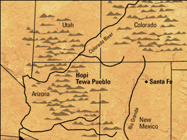

The Hopi-Tewa live on the MESAS of the Southwestern United States. It's dry and hot there; the climate is ARID.
Many years ago, the Tewa people moved from their own homeland near Santa Fe in New Mexico to live with the Hopi in Arizona.

|  |
The Hopi-Tewa live on the MESAS of the Southwestern United States. It's dry and hot there; the climate is ARID.Many years ago, the Tewa people moved from their own homeland near Santa Fe in New Mexico to live with the Hopi in Arizona. |
|